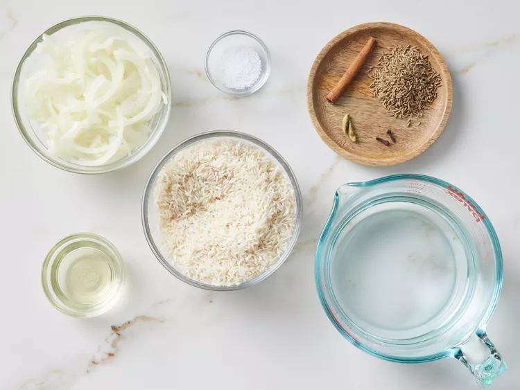
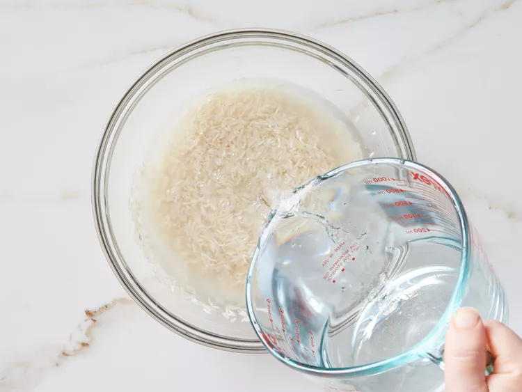
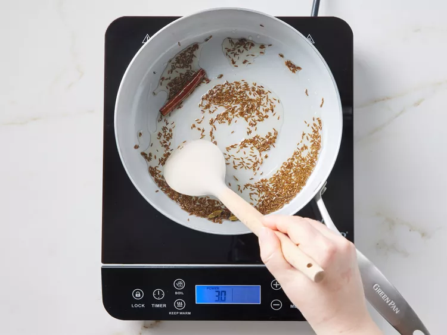
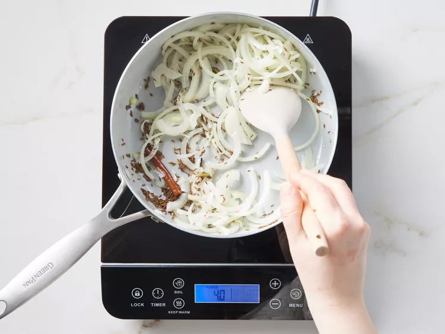
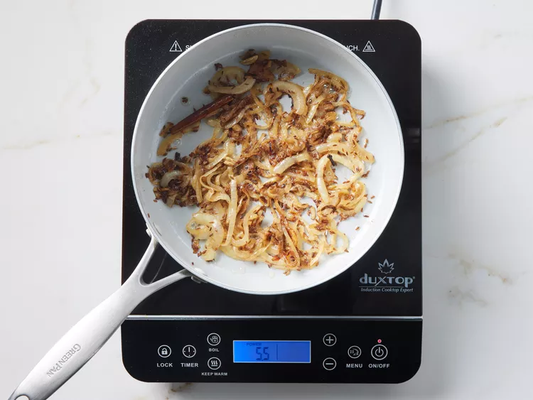

Indian Style Basmati Rice

Ingredients
- 1 ½ cups basmati rice
- 2 tablespoons vegetable oil
- 1 (2 inch) piece cinnamon stick
- 2 pods green cardamom
- 2 whole cloves
- 1 tablespoon cumin seed
- 1 small onion, thinly sliced
- 2 ½ cups water
- 1 teaspoon salt, or to taste
Directions
- Gather all ingredients.

-
Place rice into a bowl with enough water to cover. Set aside to soak for
20 minutes.

-
In the last 10 minutes of soaking, heat oil in a large pot or saucepan
over medium heat. Add cinnamon stick, cardamom pods, and cloves, then
stir in cumin seed.

-
Cook and stir until fragrant and toasted, about a minute. Add sliced
onion and stir.

-
Sauté until the onion is tender and a rich golden brown color, about 10
minutes.

-
Drain water from rice, and stir into the pot. Cook and stir rice until
lightly toasted, about 3 minutes.
-
Add water and salt, and bring to a boil. Cover and reduce heat to low.
Simmer until all the water has been absorbed, about 15 minutes.
- Let stand for 5 minutes, then fluff with a fork before serving.